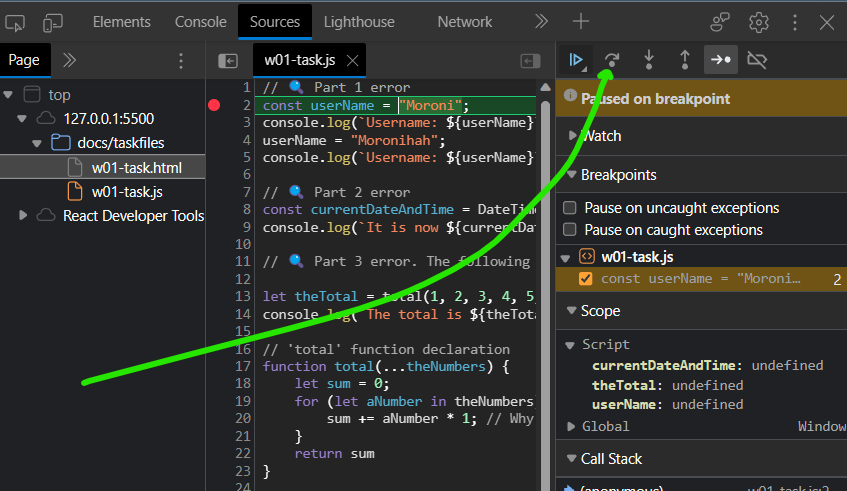
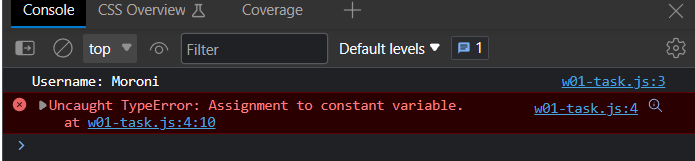
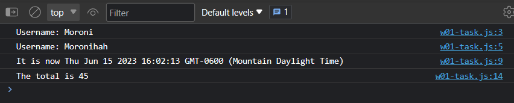
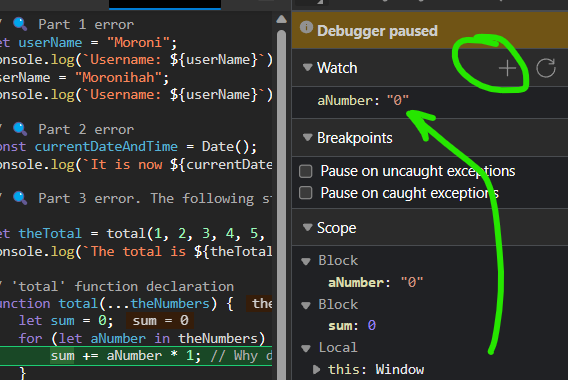

become familiar with the Visual Studio Code development environment,
practice using the console and built-in stepwise debugger in a browser's
DevTools environment,
work with JavaScript variables, and
publish your local work to your cse121b GitHub Pages remote space.
Instructions
Setup Files
All of the programming work for this class will be stored in your
local cse121b repository folder established in the assigned setup activities and then a copy will be pushed (uploaded) to your
remote GitHub Pages cse121b repository.
Open Visual Studio Code (VS Code) and open your existing local cse121b
repository/folder.
Create a sub-folder within the cse121b folder named w01-task.
Download the starting
files and unzip them. This will be done outside of VS Code.
Move the two (2) unzipped files into the w01-task folder you created. Use your operating
systems file/folder management tool to do this. The files will be viewable in VS Code once
you move them into the project folder.
HTML
In VS Code, open the w01-task.html file.
Replace the <h1> content with your full name.
Save those changes. Get used to saving often.
Console
The console is a tool that allows you to see what is going on in the code. It is a simple
output tool where you can see the values of variables and the results of calculations. It is
also a place where you can type in commands and see the results of those commands. Programmers
will often output to the console temporarily to debug issues in the code.
In VS Code, right mouse click the w01-task.html file and click Open with Live
Server to have it open in a default browser tab/window.
Open the browser's DevTools (Inspect).
Click on the Console tab.
✅Verify that you can see in the console that the program wrote one line of output and then
produced an error.
💡Alternatively, you can toggle the DevTools drawer view which can
contain the console panel by clicking esc. Specific tools can be added as panels
by using the + (More Tools) button.
Stepwise Debugger
Part 1: Error - Assignment to constant variable
Click on the Sources panel and use the Navigator tab to find the
w01-task.js file. Select it.
In the Debugger view panel, you will see a column of numbers indicating the line numbers
for each line in the JavaScript code file. This column is called the 'gutter'. Click on the
2. You will see an indicator show up in the gutter. This indicator is showing you where a
'break point' has just been set in the code. Breakpoints are how you temporarily pause the
code's execution so you can slow the program down and "step" through the program manually.
This is the stepwise debugger.
Click the browser's refresh button to render the page again. The browser will go into
debugger mode.
Line 2 of the code will be highlighted. It has not executed. To execute this one line of
code and only this one line of code, click the Step Over Next Function Call
button.

Figure 1: Screenshot in DevTools Marking the 'Step Over' Button
It is also OK to use the Step button (shown
highlighted in the image).
Now the variable userName was assigned the value Moroni. You can hover your
mouse pointer over the userName variable in the debugger and it will show you the assigned
value.
Click the Step Over ... button two (2) more times. This will produce an
error on Line 4 when the debugger tries to process that line of code. This is the part 1
error.
In the Console panel, note that line 3 produced output and an error was produced.
✅Verify that you see these two console output lines.

Figure 2: Screenshot of Console Panel with Part 1 Error
You can then click on the linked line number in the error line or even view the ❌ at the
end of the line number in the debugger window. ❔How can you fix the
Assignment to constant variable error?
We will assume that we actually do want to reassign the
userName variable.
Solution
Declare the userName variable with let versus
const.
☑️In VS Code, with the w01-task.js file open in the editor, fix the 🔍 Part 1 error and
view the results in the browser's console panel.
Part 2: Error - DateTime is not defined.
With the page running in the browser and DevTools open, click off the breakpoint on Line 2
and set a breakpoint on Line 8.
Refresh the page to render the page again and it will stop on Line 8.
Click Step Over and view the error. DateTime is not defined. The program
thinks you are referencing a variable name since DateTime is not in its library.
Fix the problem by researching how to display the current Date and Time in JavaScript in
an easy way.
☑️In VS Code, with the w01-task.js file open in the editor, fix the 🔍 Part 2 error and
view the
results in the browser's console.
Solution
One simple solution is to use the Date() object. const currentDateAndTime = Date();
Part 3: Error
Remember that the intent of this assignment is NOT for you to be able
to solve all the errors with the JavaScript. Rather, it is to become familiar with debugging
using DevTools and to edit and publish the page with its referenced JavaScript.
With the page running in the browser and DevTools open, remove all the breakpoints in the
debuggers gutter of line numbers.
The program does not produce any red-lined reference errors at this point. ✅ Verify
that the console output looks like this:

Figure 3: Screenshot of Console Panel with Part 3 Running
Add a breakpoint on Line 13.
Step through the program using Step not Step Over, identifying
the flow of the program step-by-step.
In the debugger, add a Watch value on the aNumber variable
by clicking the plus symbol on the Watch panel and entering "aNumber".
Keep stepping through the program and observe the flow and that "aNumber" watch value.
✅Confirm that the first value assigned to it after being "undefined" is "0", a string.

Figure 4: Screenshot of Debugger Watch Panel
Try to determine the problem.
It is NOT required that you fix the code for this error.
Solution
In JavaScript, the for ... in loop is used to iterate over the properties of
an object, not for iterating over the elements of an array. When used with an array, it
iterates over the indices of
the array, not the actual elements. Thus returning 45 as the indices are 0 to 9. The
solution can be to change the for loop to a for ... of loop. The function
should return 55.
Submission
Complete all the marked ☑️ fixes to the JavaScript code.
Commit your changes to your local repository.
Push your changes to the cse121b GitHub Pages enabled repository.